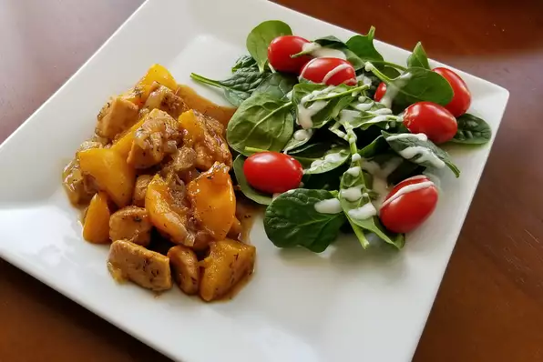

Apricot Chicken with Balsamic Vinegar

Description
TThis chicken is cooked with apricots, balsamic vinegar, broth, and thyme. It's super yummy and a hit every time!
Ingredients
- 2 tablespoons extra-virgin olive oil
- 2 pounds chicken breast tenderloins, cut into bite-size pieces
- salt and ground black pepper to taste
- 1 large onion, chopped
- ¼ cup balsamic vinegar, or to taste
- 220 dried apricots
- 1 cup chicken stock
- 1 cup apricot preserves
- 1 tablespoon chopped fresh thyme
- 3 tablespoons chopped fresh flat-leaf parsley (Optional)
Steps
- Heat the olive oil in a large skillet with a lid over medium-high heat. Season the chicken with salt and pepper, and cook in the hot oil until golden brown around the edges, but still pink in the center, about 5 minutes. Stir in the onion, and cook for about 3 minutes more. Pour in the balsamic vinegar, bring it to a simmer, and allow it to reduce for a few minutes.
- Cut half of the apricots in half, leaving the others whole. Place the apricots into the skillet, and pour in the chicken stock. Bring to a simmer, then stir in the apricot preserves and thyme. Reduce the heat to medium-low, cover, and simmer until the apricots have softened, 10 to 15 minutes. Sprinkle with chopped parsley to serve.